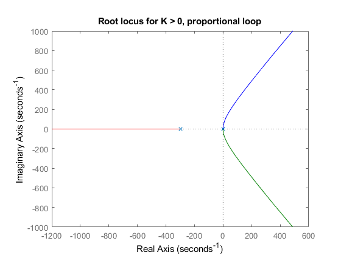
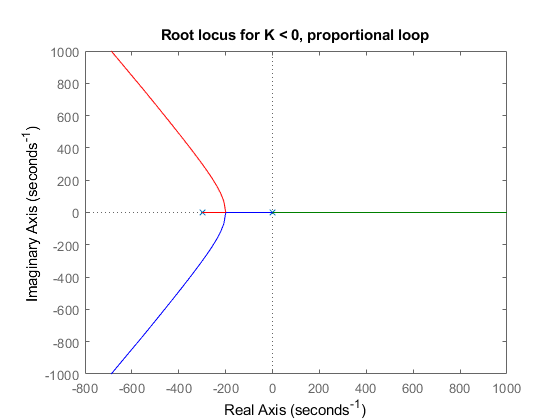

Simplified model for altitude control of a drone
The title kinda says it all
Contents
Initializing this bad boy
close all
clear
clc
Setting the system parameters
Parameters for running the simulation
finaltime = 200; StepSize = 0.01; % Problem parameters initial_step = 1; %s M = 1; %kg G = 9.8; %m/s^2 Kt = 3.575e-5; %N/(rad/s)^2 Z0 = 2; %m Kp = 0.5; Kd = 1; omega_0 = sqrt(G*M/Kt); %rad/s u_0 = omega_0; dZr = 2;
Defining Transfer Function for root locus
Proportional
s = tf('s'); K_prop = 600*Kp*Kt*omega_0/M; g_prop = 1/(s^2*(s+300)); figure(5) rlocus(g_prop); % Proportional + Derivative K_prop_der = 600*Kd*Kt*omega_0/M; z = Kp/Kd; g_prop_der = (s+z)/(s^2*(s+300)); figure(6) rlocus(g_prop_der); 
Running the complete simulation
We cycle through all the step sizes specified in the StepSizes vector
for i = 1:length(dZr)
simout_tot = sim('total','StopTime',num2str(finaltime),'FixedStep',num2str(StepSize));
Warning: Solver is encountering difficulty in simulating model '<a
href="matlab:open_system ('total')">total</a>' at time 1.0000000000000036.
Simulink will continue to simulate with warnings. Please check the model for
errors.
Warning: Solver was unable to reduce the step size without violating minimum
step size of 3.55271e-15 for 1 consecutive times at time 1. Solver will
continue simulation with the step size restricted to 3.55271e-15 and using an
effective relative error tolerance of 0.0135238, which is greater than the
specified relative error tolerance of 0.001. This usually may be caused by the
high stiffness of the system. Please check the system or increase the solver <a
href="matlab:configset.internal.open('total','MaxConsecutiveMinStep');">Number
of consecutive min steps</a> violation parameter.
Plotting some dope-ass graphs
figure(4*(i-1)+1)
plot(simout_tot.get('omega_p').time, simout_tot.get('omega_p').signals.values/2/pi*60);
hold on
plot(simout_tot.get('omega_pd').time, simout_tot.get('omega_pd').signals.values/2/pi*60);
xlabel('time (s)')
ylabel('w (rpm)')
title(strcat("Angular velocity ", "dZr = ", num2str(dZr), " m"))
legend('prop','dif prop','Location','southwest');
figure(4*(i-1)+2)
plot(simout_tot.get('z_p').time, simout_tot.get('z_p').signals.values);
hold on
plot(simout_tot.get('z_pd').time, simout_tot.get('z_pd').signals.values);
xlabel('time (s)')
ylabel('z (m)')
title(strcat("Altitude ", "dZr = ", num2str(dZr), " m"))
legend('prop','dif prop','Location','southwest');
figure(4*(i-1)+3)
plot(simout_tot.get('omega_p').time, simout_tot.get('z_pt_p').signals.values);
hold on
plot(simout_tot.get('omega_pd').time, simout_tot.get('z_pt_pd').signals.values);
xlabel('time (s)')
ylabel('Velocidade (m/s)')
title(strcat("Velocity ", "dZr = ", num2str(dZr), " m"))
legend('prop','dif prop','Location','southwest');
figure(4*(i-1)+4)
plot(simout_tot.get('omega_p').time, simout_tot.get('z_2pt_p').signals.values);
hold on
plot(simout_tot.get('omega_pd').time, simout_tot.get('z_2pt_pd').signals.values);
xlabel('time (s)')
ylabel('Aceleração (m/s^2)')
title(strcat("Acceleration ", "dZr = ", num2str(dZr), " m"))
legend('prop','dif prop','Location','southwest');


end